Six starter enemies. Seconds for basic attacks; accepted player moves for abilities. Forest remains a development test zone. These assets and the temporary music are ready for your review, not a claim of launch completeness.
Preview scale · The animation timer uses the exported per-frame durations. Each canvas keeps native pixels; enlargement uses nearest-neighbor sampling.
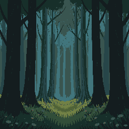
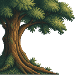
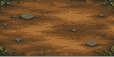
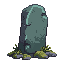
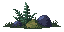
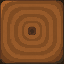
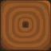
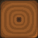
Soil occupies the actor contact plane. Distinct woodland and foliage layers sit behind it. Log corners remain backed by wood: no global background shows through the board.
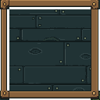
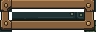
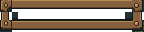
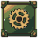
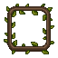
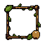
Main menu and opened settings keep their existing presentation. Player and bottom HUD keep the separate dark horizontal timber material. Existing gem artwork, rank badges and neutral health shells remain.
2:17 · 112 BPM · original local synthesis · plucked wood, reed melody, seed chimes and restrained percussion. This is a temporary review cue. Music controls and zone transitions use the existing music system.
These are runtime captures, separate from the native sprite previews above.
Native dimensions, palettes, frame bounds, timings and pivots · Modular image checks